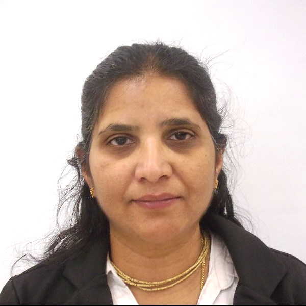

International Conference on Smart Eco-Systems using AI and Green Computing for Sustainable Development ICSEAI 2025
March 20-21, 2025
Hybrid Mode
Conference Proceedings
ALL ACCEPTED & PRESENTED papers will be published in SCOPUS indexed SPRINGER
Submission is now open: Till December 15, 2024
About the Conference
The International Conference on Smart Eco-Systems using AI and Green Computing for Sustainable Development (ICSEAI) 2025 is a premier event dedicated to the convergence of Artificial Intelligence (AI), Green Computing, and sustainable ecosystem management. The conference aims to foster collaboration and exchange of innovative ideas, cutting-edge research, and technological advancements that can contribute to building eco-efficient systems. By bringing together experts, practitioners, and researchers, ICSEAI 2025 will explore how AI and green computing can address global challenges, promote environmental sustainability, and facilitate the transition to a greener, more sustainable future.
The primary aim of ICSEAI 2025 is to highlight the role of AI and green computing in driving sustainable development. The conference will explore how these advanced technologies can optimize resource usage, reduce environmental impacts, and create smarter, more efficient ecosystems across various sectors, including energy, agriculture, manufacturing, and urban planning. By fostering interdisciplinary collaborations, the conference seeks to inspire innovative solutions that contribute to a sustainable world.
Potti Sriramulu Chalavadi Mallikarjuna Rao College of Engineering and Technology (PSCMRCET) was started in the year 2008, under the aegis of, more than hundred years old, Sri Kanyaka Parameswari Vissamsetti Venkataratnam Hindu High Schools Committee (SKPVVHHSC – Established in 1906) , by a group of philanthropists belonging to Vijayawada. The college is permanently affiliated to JNTUK Kakinada and is approved by AICTE, New Delhi. The institution is accredited with A+ + grade (3.68/4) by NAAC and the engineering programs are accredited by NBA. The college offers B. Tech, MBA, MCA and M. Tech programs. Spread over a sprawling campus with aesthetically designed buildings, the college has become the source of inspiration for the students. PSCMRCET has become synonymous with ultra modern learning practices.
PSCMRCET aims to impart quality education supported by societal responsiveness fostering holistic development of its students. The mission of the college is to impart quality and value based technology and management education relevant to contemporary corporate and societal needs through continuous learning, societal responsiveness supported by strategic
...
With the advent of IoT (Internet of Things) and Industry 4.0, the
volume of data is growing at an exponential rate. Given the
massive amount of data that is produced, it has led to the matured
discipline of Data Science that involves collection,
visualization, processing, and modeling of large and complex data
sets from different domains and sources. Data science is an
essential part of many industries today, and Its popularity has
grown over the years. Companies have started implementing data
science techniques to grow their business and increase customer
satisfaction. Its immense popularity has increased the demanding
interest among the students to choose it as a career option. Data
Science is an emerging area of Computer Science and Engineering
(CSE).The Department of CSE-Data Science was established in the
year 2022 with an annual intake of 60 students.
...
Master of Computer Applications (MCA) is a two-year professional
post-graduate course for candidates wanting to delve deeper into
the world of Computer Application development with the help of
learning modern programming language. The programme is a blend of
both theoretical and practical knowledge proving in-depth
knowledge of the various computer languages and IT applications.
The Department has excellent learning facilities which include
Seminar Hall, Department Library and a dedicated Computer Lab.
Faculty members are given various opportunities to attend
workshops, short-term courses, seminars, and conferences for
updating knowledge, to cope with the continuous changes and
challenges in the field of Computer Science and its applications.
Why MCA in PSCMRCET? Hands-on Curriculum designed by experts from
academia and industry
...
Important Dates / Deadlines
Event
Date
Manuscript submissions open
October 1, 2024
Deadline for submissions
December 15, 2024
Under review timeline
December 15, 2024 - January 31, 2025
Notification of acceptance
February 05, 2025
Author registration deadline
February 06th to March 07th, 2025
Conference Program scheduled
March 20th, 21st, 2025
Final revised manuscript
April 5th, 2025
Important Dates / Deadlines
Event
Manuscript submissions open
Date
October 1, 2024
Event
Deadline for manuscript submissions
Date
December 15, 2024
Event
Under review timeline
Date
December 15, 2024 - January 31, 2025
Event
Notification of acceptance
Date
February 05, 2025
Event
Author registration deadline
Date
February 06th to March 07th, 2025
Event
Conference program scheduled
Date
March 20th, 21st, 2025
Event
Final revised manuscript
Date
April 5th, 2025
KEYNOTE SPEAKERS
Dr Elochukwu UKWANDU
Lecturer, Cardiff Schol of Technologies, Cardiff Metropolitan
University, Wales, United Kingdom
A Lecturer in Computer Security and Head of Cryptography and
Innovation Research Group, Cyber Security and Information
Network Centre, Cardiff Schol of Technologies, Cardiff
Metropolitan University, Wales, United Kingdom. He is a PhD
graduate of Edinburgh Napier University from the School of
Computing specialising in cryptography, information and cyber
security in teaching, and learning, research, and development.
Above all, a UK Moonshot creator in transformative technologies;
Fellow of Higher Education Academy (FHEA); Member, IEEE; Member
of three Peer Review Colleges - EPSRC, British Council – ISPF
and UKRI Talent Group. Elsevier has recognised him as a top Open
Access contributor (2020-2022) for having one of my articles
linked to the United Nations Sustainable Goals, helping to
tackle some of the world's greatest challenges. He founded and
Co-Ordinate an inter-disciplinary research group with academics
from more than eight different Universities in Nigeria and South
Africa as cohorts. The group focuses in solving machine
learning, social media, e-Learning, and cyber security
challenges with relevance to the African continent.
Prof. Dr. Iyyanki V. Muralikrishna
Director, Academic Programs, Haas Institute for Business
Innovation, University of California Berkeley, USA
Prof. Dr. Iyyanki V. Muralikrishna, obtained his Ph.D from the
Premier Institute -Indian Institute of Science (IISc),
Bangalore, is presently Director, Academic Programs, Haas
Institute for Business Innovation, University of California
Berkeley, USA. He is a former Dr Raja Ramanna Distinguished
Fellow at the Defense Research and Development Organization
(DRDO), India, and He served as assistant professor in IIT
Madras (1976-1979), senior scientist and Head of the Marine
Applications Division, National Remote Sensing Agency, Indian
Space Research Organisation (1979-1987), Professor and Founder
Head of the Centre for Spatial Information Technology (CSIT) at
Jawaharlal Nehru Technological (JNT) University(1990-2008), and
Director of JNT University's Research and Development Centre
(2005-2008). The National Coordinator for Geospatial Public
Health, which is the National Networking Government of India
Project. He is Professor and Founder Head of the Centre for
Spatial Information Technology (CSIT) At Jawaharlal Nehru
Technological University (1990-2005), and Director of Research
and Development Centre (2005-2008).

Sukanya Konatam
Senior Manager of Enterprise Data Governance and Data Science,
Vialto Partners, Texas, USA
Mrs. Sukanya Konatam Senior Manager, Enterprise Data Governance
and Data Science with over 18 years of experience enabling
companies with digital transformation and helping them become
data driven organization. A highly regarded thought leader with
an exceptional background in data science, data governance, data
Architecture, data modeling, data analytics, data visualization,
automation, BI modernization. She has implemented data centric
solutions for several industries including banking & financials,
telecom, health care, automobile, criminal justice and many
more. Currently, Sukanya is leading Enterprise Data Governance
Modernization efforts at Vialto Partners with multiple teams of
data engineers, data scientists & analysts. With her proven
record of strategic thinking and Solutions Architecture Design,
she is particularly responsible to help create a 360-degree view
for the system, data security, master data management, enrich
data sets, build modern dashboards, automate manual data
processes. She defines indicators of performance and quality
metrics and ensures compliance with data, defines roles and
responsibilities related to data governance and ensures clear
accountability. She facilitates the development and
implementation of data quality standards, data protection
standards and adoption requirements across Vialto Partners.
Graduated with “Master’s in Computer Applications” from Andhra
University, INDIA, and “Postgraduation in Artificial
intelligence & Machine learning” from UT Austin, Texas, USA.
Suryapraksh Nalluri
Senior Vice President - Information Security Operations Group
Manager, City Group, Texas, USA
As a distinguished Executive Leader in Cybersecurity, he has
achieved exceptional results over his 18-year career, with a
focused dedication to cybersecurity for the past decade. His
achievements are highlighted by his pioneering of comprehensive
security strategies, which have fortified organizations against
relentless cyber threats. He has championed DevSecOps practices,
ensuring security integration throughout the software
development lifecycle, and has adeptly led security
transformation initiatives, fostering adaptive security cultures
that evolve with emerging threats. His influence extends to
digital product strategies, where he has aligned technology
innovations with security requirements. Combining a background
in both development and design, his leadership in cybersecurity
is distinguished by a unique blend of technical acumen and
creative insights. He has spearheaded vulnerability assessments
and penetration testing (VAPT) for web, mobile, and APIs,
providing vital defenses against cyber threats. Additionally, he
has effectively managed and optimized resources within his
teams, ensuring cost-effective solutions, and has driven
innovation through research and development, conceptualizing
exploits and utilizing automation to enhance cybersecurity
operations.
Dr. Rahul Pandya
Assistant Professor in Department of EECE at Indian Institute of Technology, Dharwad, India
Dr. Rahul Pandya completed his M.Tech. in Electrical Engineering from the Indian Institute of Technology, Delhi, in 2010, and his Ph.D. from the Bharti School of Telecommunication at the same institute in 2014. He worked as a Senior Network Design Engineer in the Optical Networking Industry at Infinera Pvt. Ltd., Bangalore, from 2014 to 2018. From 2018 to 2020, he served as an Assistant Professor in the ECE Department at the National Institute of Technology, Warangal. Currently, he is a faculty member in the Electrical, Electronics, and Communication Engineering Department at the Indian Institute of Technology, Dharwad. He has also been a SIRE fellow and visiting scholar at Virginia Tech, USA.
His research areas include Wireless Communication, Optical Communication, Optical Networks, Computer Networks, Machine Learning, and Artificial Intelligence. He is involved in multiple projects, including SERB, SPARC, DoT-TTDF-6G, AICTE-ATAL, SGNF, and RSM.
Dr. Ghanapriya Singh
Assistant Professor (Grade I) in Department of Electronics and
Communication Engineering at National Institute of Technology,
Kurukshetra, India
Dr. Ghanapriya Singh is working as an Asst. Professor (Grade I)
in Department of Electronics and Communication Engineering at
National Institute of Technology, Kurukshetra since Nov 2022.
Prior to this, she was working as an Asst. Professor (Grade II)
in Department of Electronics Engineering at National Institute
of Technology, Uttarakhand since 2013. She has received her
Ph.D. degree in Signal Processing from Indian Institute of
Technology (IIT) Delhi. During her research at IIT, she was
working on a project with STMicroelectronics, Santa Clara,
California, USA. Her research work done at IIT was also
showcased at CES, USA that is the largest consumer electronics
show. She is an Inventor on 5 granted US patents and a European
patent. She is an Investigator in the project funded by Ministry
of Electronics and Information Technology and Department of
Science and Technology, Govt. of India. She has authored in high
impact factor SCI indexed journals. Her current research
interests include context awareness, image processing, speech
processing, signal processing for IoT.
CONFERENCE FEATURES
FOCUSED NETWORKING
Provides a free and open atmosphere where attendees talk and
engage in creative ways.
EXPERT SPEAKERS
Our speakers represent the cream of research and development
practitioners worldwide.
BRILLIANT IDEAS
High-impact, collaborative and new approaches to some of the
world’s toughest problems.
EXCEPTIONAL PROGRAM
Includes demonstrations, keynote speeches, plenary panel, breakout
sessions as well as the industry program.
GLOBAL PARTICIPATION
Anticipating attendees from various countries all over the world.
INSPIRATIONAL LEARNING
Bringing together researchers from several fields to collaborate
together and create lasting change.
HONORS & AWARDS
BEST PAPER
WOMEN EXCELLENCE
SESSION WINNER
UNIQUE RESEARCH AREA
YOUNGEST AND OLDEST
BEST PRESENTATION
Indexing
Post-conference, proceedings will be made available to the following
indexing services for possible inclusion: